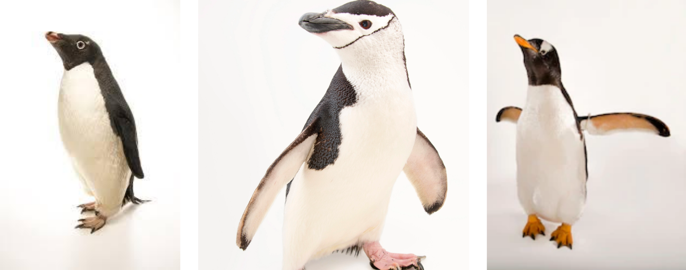
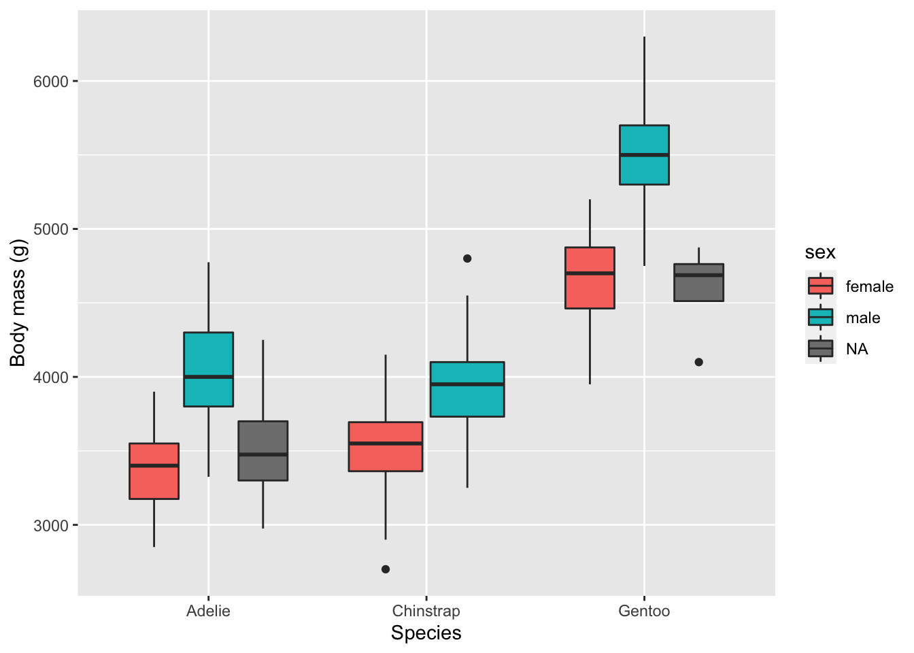

# import libraries
library(janitor)
library(tidyverse)
library(factoextra)
#import data
install.packages('palmerpenguins', repos = "http://cran.us.r-project.org")
library(palmerpenguins)
data(package = 'palmerpenguins')Palmer penguins EDA 🐧
Original data and source information is available here.
Import data
Introduction to dataset
There are two datasets in this data. We are going to use the larger dataset penguins_raw which contains all the variables and original names.
head(penguins_raw)# A tibble: 6 × 17
study…¹ Sampl…² Species Region Island Stage Indiv…³ Clutc…⁴ `Date Egg` Culme…⁵
<chr> <dbl> <chr> <chr> <chr> <chr> <chr> <chr> <date> <dbl>
1 PAL0708 1 Adelie… Anvers Torge… Adul… N1A1 Yes 2007-11-11 39.1
2 PAL0708 2 Adelie… Anvers Torge… Adul… N1A2 Yes 2007-11-11 39.5
3 PAL0708 3 Adelie… Anvers Torge… Adul… N2A1 Yes 2007-11-16 40.3
4 PAL0708 4 Adelie… Anvers Torge… Adul… N2A2 Yes 2007-11-16 NA
5 PAL0708 5 Adelie… Anvers Torge… Adul… N3A1 Yes 2007-11-16 36.7
6 PAL0708 6 Adelie… Anvers Torge… Adul… N3A2 Yes 2007-11-16 39.3
# … with 7 more variables: `Culmen Depth (mm)` <dbl>,
# `Flipper Length (mm)` <dbl>, `Body Mass (g)` <dbl>, Sex <chr>,
# `Delta 15 N (o/oo)` <dbl>, `Delta 13 C (o/oo)` <dbl>, Comments <chr>, and
# abbreviated variable names ¹studyName, ²`Sample Number`, ³`Individual ID`,
# ⁴`Clutch Completion`, ⁵`Culmen Length (mm)`First we are going to look at the dataset to understand the variables and do some data cleaning.
# clean dataframe column names
penguins_raw <- clean_names(penguins_raw)
# check column names to identify variables of interest
colnames(penguins_raw) [1] "study_name" "sample_number" "species"
[4] "region" "island" "stage"
[7] "individual_id" "clutch_completion" "date_egg"
[10] "culmen_length_mm" "culmen_depth_mm" "flipper_length_mm"
[13] "body_mass_g" "sex" "delta_15_n_o_oo"
[16] "delta_13_c_o_oo" "comments" Species
# how many species are in our dataset?
unique(penguins_raw$species) # unique values[1] "Adelie Penguin (Pygoscelis adeliae)"
[2] "Gentoo penguin (Pygoscelis papua)"
[3] "Chinstrap penguin (Pygoscelis antarctica)"# simplify species names
penguins_raw <- penguins_raw %>%
mutate(species = recode(species, "Adelie Penguin (Pygoscelis adeliae)" = "Adelie",
"Gentoo penguin (Pygoscelis papua)" = "Gentoo",
"Chinstrap penguin (Pygoscelis antarctica)" = "Chinstrap"))
# check sex variable
unique(penguins_raw$sex) [1] "MALE" "FEMALE" NA penguins_raw$sex <- tolower(penguins_raw$sex) # convert to lower caseLocation
# check region variables
penguins_raw %>%
group_by(species, region, island) %>%
tally()# A tibble: 5 × 4
# Groups: species, region [3]
species region island n
<chr> <chr> <chr> <int>
1 Adelie Anvers Biscoe 44
2 Adelie Anvers Dream 56
3 Adelie Anvers Torgersen 52
4 Chinstrap Anvers Dream 68
5 Gentoo Anvers Biscoe 124# there is only one region with three islandsData for these penguin species have been recorded for three islands (Biscoe, Dream and Torgensen) in the Anvers region. Adélie penguins occur in all three islands, and it is the only species with data recorded in Torgensen. The data collectors found Adélie and Chinstrap penguins in Dream island, and Adélie and Gentoo penguins in Biscoe.
Body mass
Let’s compare body mass between the three species and see how it varies between male and female penguins (note: NA are samples for which sex was not recorded).
ggplot(penguins_raw, aes(x=species, y=body_mass_g, fill=sex)) +
geom_boxplot() +
xlab("Species") + ylab("Body mass (g)")
In general for all species males tend to have larger mass (i.e., they are heavier) than female penguins, and Gentoo penguins are the larger species of the three.
Principal components analysis (PCA)
# select numerical variables only
data_num <- select_if(penguins_raw, is.numeric) # Subset numeric columns with dplyr
# remove sample_number column
data_num = select(data_num, -c(sample_number))
data_num# A tibble: 344 × 6
culmen_length_mm culmen_depth_mm flipper_length_mm body_mas…¹ delta…² delta…³
<dbl> <dbl> <dbl> <dbl> <dbl> <dbl>
1 39.1 18.7 181 3750 NA NA
2 39.5 17.4 186 3800 8.95 -24.7
3 40.3 18 195 3250 8.37 -25.3
4 NA NA NA NA NA NA
5 36.7 19.3 193 3450 8.77 -25.3
6 39.3 20.6 190 3650 8.66 -25.3
7 38.9 17.8 181 3625 9.19 -25.2
8 39.2 19.6 195 4675 9.46 -24.9
9 34.1 18.1 193 3475 NA NA
10 42 20.2 190 4250 9.13 -25.1
# … with 334 more rows, and abbreviated variable names ¹body_mass_g,
# ²delta_15_n_o_oo, ³delta_13_c_o_oo# only keep rows without missing data
data_num_complete <- data_num[complete.cases(data_num), ]# PCA
pc <- prcomp(data_num_complete,
center = TRUE,
scale. = TRUE)
attributes(pc)$names
[1] "sdev" "rotation" "center" "scale" "x"
$class
[1] "prcomp"